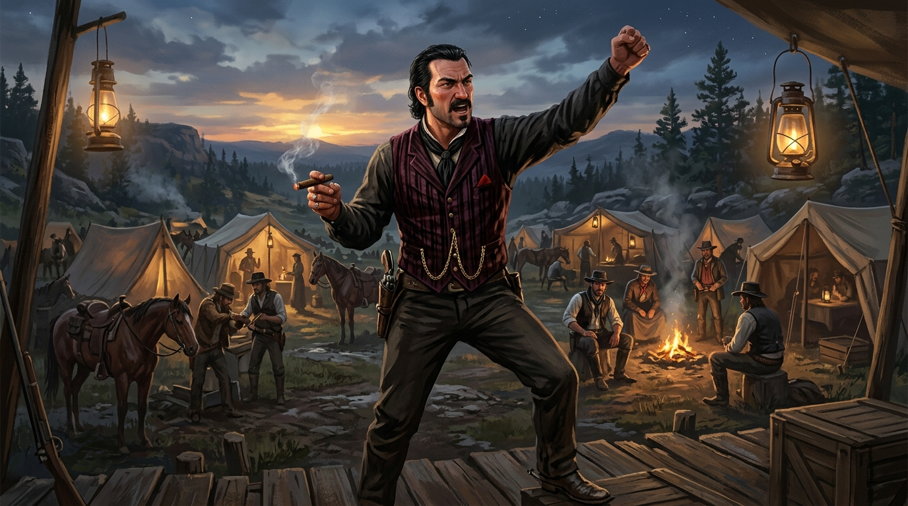
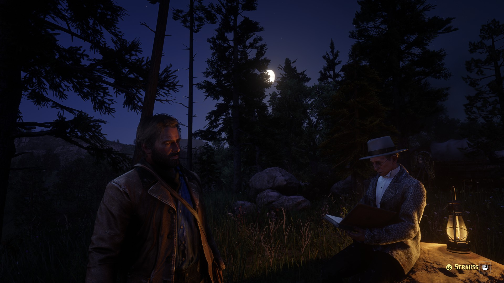
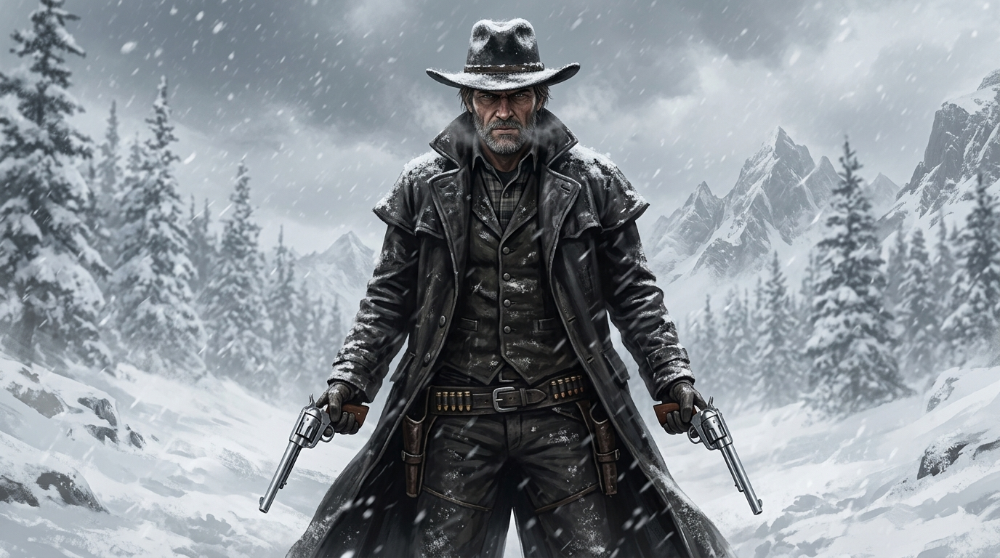
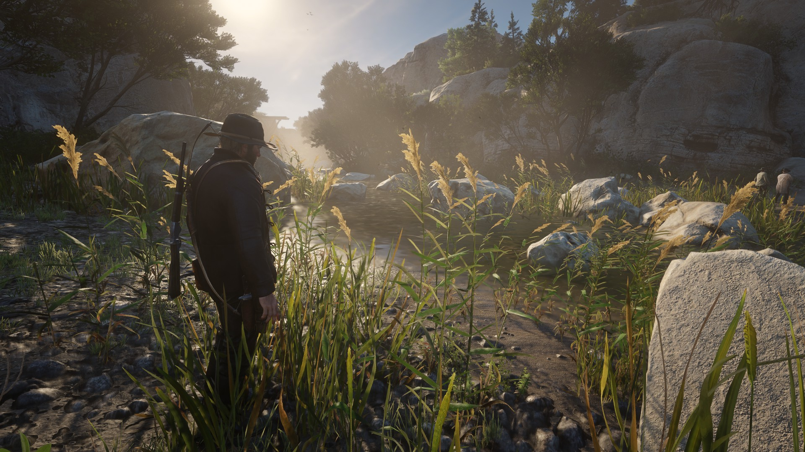
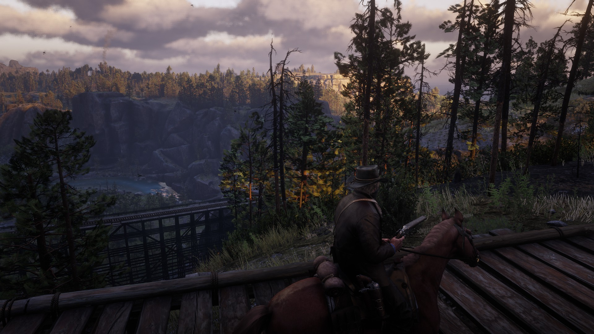

六幕剧情前因后果全景因果链
时代前因 · 文明压境与黑水镇溃败
"大镖客2的剧情之所以封神，是因为它用血与泪讲透了一个时代覆灭的必然规律！故事的前因发生在1899年：工业机器轰鸣，现代法律与平克顿侦探如同铁网般罩向美洲大陆，自由驰骋的西部牛仔时代彻底走到尽头！范德林德帮作为最后的法外狂徒，在黑水镇铤而走险抢劫渡轮惨遭埋伏，死伤惨重，只能在暴风雪掩护下仓皇逃进犁刀村雪山！从那一刻起，毁灭的倒计时就已经敲响！"
工业文明与法律铁幕降临
- 平克顿私人侦探受雇资本家，地毯式追剿法外之徒
- 荒蛮西部的自由拓荒时代已死，牛仔无处容身
黑水镇渡轮大劫案折戟
- 听信迈卡激进提议惨遭埋伏，多名兄弟当场横死
- 大批钞票被扣留无法取回，帮派陷入绝望财务危机
仓皇逃入暴风雪绝境
- 饥寒交迫躲进犁刀村废弃矿场，队伍人心惶惶
- 老二亚瑟扛起打猎找粮重任，维系帮派残存生机
幻梦破灭 · 达奇画饼与偏执失控
"帮派为什么会一步步走向毁灭？核心就在于领袖达奇的病态执念！达奇每天都在营地激情演讲画大饼：“兄弟们，再干一票大的！攒够钱我们就买船去大溪地种芒果！”然而现实是：他越干越砸！不仅引入了唯利是图的暴徒迈卡，还手染无辜鲜血。从瓦伦泰恩枪战一路逃窜，再到圣丹尼斯银行劫案何西阿惨死，达奇的理性彻底崩盘，开始怀疑每一个真心待他的老兄弟！"
大溪地种芒果的虚妄幻梦
- 口口声声为了自由与家庭，实则享受被众人崇拜仰望
- “再干最后一票”、“多一点信任”，沦为致命催命符
迈卡趁虚而入蛊惑人心
- 迈卡谄媚逢迎博取信任，挑拨达奇与老部下关系
- 何西阿与亚瑟的理性劝阻被达奇斥责为“背叛与软弱”
核心智囊何西阿惨遭枪决
- 银行抢劫再遭伏击，精神支柱何西阿倒在乱枪之下
- 逃亡热带瓜玛岛九死一生，达奇彻底走向疯狂嗜血
因果绝症 · 催债恶果与灵魂觉醒
"整个游戏最震撼人心的转折，是一场残酷的因果报应！亚瑟早年替施特劳斯向患病的农夫唐斯先生暴力催债，被吐了一脸带血的唾沫；到了圣丹尼斯街头，亚瑟剧烈咳嗽昏倒在马路上，医生冷酷地宣布了死刑：重度肺结核！在没有抗生素的1899年，这等于当场枪决！但绝症反倒砸碎了亚瑟思想上的枷锁：既然自己必死无疑，那就用剩下的最后一口气，救出约翰一家，做真正对的事情！"
向弱者施暴结下的致命恶果
- 奉命对唐斯农夫拳脚相加逼债，沾染致命结核杆菌
- 过去几十年的土匪暴行，以最残酷的方式回击肉体
圣丹尼斯诊所的绝望诊断
- 不可逆的进行性肺结核，咳血消瘦体力急剧衰竭
- 死亡倒计时让亚瑟彻底看清了达奇的伪善与冷酷
将最后的生命献给救赎
- 驱逐放高利贷的施特劳斯，暗中接济孤儿寡母
- 立誓豁出性命，也要保全约翰·马斯顿一家的未来！
帮派分崩 · 迈卡背叛与舍身护弟
"真相终于在血腥中彻底揭晓！米尔顿探员亲口吐露：从瓜玛岛回来后，迈卡就早已投降平克顿当了内鬼！当亚瑟回到营地当面质问时，疯狂的达奇却选择掏枪指向亚瑟！平克顿大军随后包围营地，子弹如雨点般倾泻！在千钧一发之际，亚瑟毅然决然拉着约翰往雪山最高处狂奔，面对步步紧逼的追兵，亚瑟推开约翰：“走！约翰！去过属于你自己的新生活！别回头！”"
平克顿走狗出卖全部情报
- 米尔顿探员吐露实情：迈卡一直在通风报信泄露行踪
- 莫莉的牺牲是场悲剧冤案，真凶一直在达奇枕边低语
海狸岩营地的终极决裂
- 亚瑟带病揭穿真相，达奇却被迈卡蛊惑不辨是非
- 兄弟手足情义彻底沦丧，平克顿神枪手大举压境围剿
把生的希望留给约翰一家
- 把马匹、枪支与自己的牛仔帽郑重交到约翰手中
- 孤身一人回头拦截追兵，为约翰争取逃出生天的生机
终极救赎 · 孤峰绝战与落日鹿影
"山顶上的终极决战，是整个游戏史上最悲壮的一幕！早已油尽灯枯的亚瑟，用尽全身最后一点力气与迈卡滚在泥泞中肉搏！赶到的达奇看着倒在血泊中大口咳血的亚瑟，终于被亚瑟眼中的坚定所震慑，默默收枪转身离去。迈卡吐着唾沫狼狈逃窜。身负重伤的亚瑟拼尽全力爬上岩石，面向东方缓缓升起的温暖朝阳，伴随着鹿影的安详浮现，平静地闭上了双眼！他赢了，他拯救了约翰！"
雪峰之巅的殊死肉搏
- 肺部撕裂剧痛，带病耗尽生命最后一丝气力纠缠迈卡
- 用血肉之躯死死拖住仇敌，为兄弟筑起无法逾越的屏障
伪善领袖最后的羞愧逃避
- 亚瑟虚弱却清澈的目光刺痛达奇良心，达奇选择抽身
- 迈卡失去靠山气急败坏，只得悻悻逃离山顶
向着朝阳迎风长眠
- 爬上孤峰崖壁，沐浴在金黄色的破晓阳光之下
- 象征高尚灵魂的林间雄鹿驻足凝望，传奇安详谢幕
尾声因果 · 比彻之愿与复仇代价
"亚瑟用生命换来的果实没有被辜负！数年之后，约翰·马斯顿洗心革面，在比彻之愿亲手打下一根根木桩，建起了属于自己的农场，给阿比盖尔和杰克一个温暖的家！然而宿命的因果从未停止：为了给亚瑟报仇，约翰终究登上了雪山，亲手击毙了迈卡！这一枪虽然大快人心，却也引来了平克顿罗斯探员的鹰犬！亚瑟完成了崇高的救赎，而复仇的硝烟，又无情地开启了初代大镖客的宿命轮回！"
亲手搭建比彻之愿农场
- 还清银行贷款，放下杀戮枪支，当一名诚实守信的农民
- 亚瑟用命换来的第二人生，在汗水中开花结果
怒斩内鬼迈卡终雪前仇
- 联手莎迪与查尔斯杀入雪山，与达奇共同击毙迈卡
- 夺回帮派黑水镇血汗钱，彻底扫除旧时代的肮脏梦魇
罗斯探员顺藤摸瓜逼近
- 枪响引来法律猎犬，罗斯探员凝视农场埋下杀机
- 向死而生的崇高救赎永载史册，史诗传奇永不褪色！
关键人物与核心场景档案
亚瑟·摩根
范德林德帮最锋利的刀与最疲惫的灵魂，大时代的见证者。

达奇·范德林德
永远喊着“我有一个绝妙计划”，最终在偏执与背叛中坠入深渊。

亚瑟的觉醒
绝症肺结核成为压垮肉体的毒药，却成了洗涤灵魂的甘霖。

老鼠 迈卡·贝尔
平克顿侦探的走狗，自私残忍的纯粹恶人，帮派瓦解的元凶。

破晓中的亚瑟
高荣誉值下的安详陨落，西部历史上最令人动容的伟岸背影。

约翰·马斯顿
继承亚瑟意志的幸存者，建起农场却终难逃脱一代的悲剧宿命。